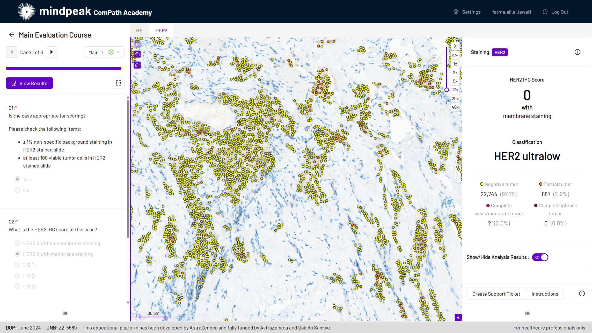

peakAcademy is a digital AI-native masterclass platform for training pathologists on complex biomarker scorings. It is a browser-based, hands-on experience built on real clinical AI - with verified cell-level golden standard, immediate feedback, and the digital workflows pathologists actually use.

Modern biomarkers ask more of pathologists than ever - and the way we train them hasn't kept up. Three gaps stand in the way.
State-of-the-art biomarkers demand precise, cell-level assessment and complex scorings. But most training is biased and offers no verified golden standard, so pathologists never see whether their reading was truly correct.
How do you certify scoring accuracy you can't measure against truth?Training depends on a handful of scarce experts and is hard to roll out across sites and geographies. Traditional formats deliver slow, delayed feedback - so performance improves slowly, if at all.
How do you bring every site, in every country, to the same standard before a trial reads out?Most training still happens on static slide sets or microscope sessions, with no exposure to the digital pathology workflows clinical practice is moving toward — yet pathologists report that AI assistance improves their diagnostic decision-making.
And every new ADC staining and target means pathologists must be retrained again.peakAcademy puts pathologists in a live digital workspace, scoring real cases with Mindpeak's diagnostic AI guiding interpretation at single-cell level. AI results are overlaid directly on the tissue as single-cell annotations, with cell counts and clinical scores in a side panel — so every read is anchored to verified ground truth. It runs in any browser, anywhere, around the clock, and surfaces performance analytics in real time. Built on the same AI Mindpeak deploys in diagnostic practice, the training mirrors the workflow of modern pathology.
Choose from or create your own multi-exam courses with full cohort control — unlimited cases per biomarker, course dependencies, and timed unlock order.
Mindpeak's diagnostic AI overlays single-cell annotations on the tissue and shows cell counts and clinical scores in a side panel.
Free-text, multiple-choice, or custom formats — mandatory or voluntary. Answers auto-save; view multiple slides per case in split screen.
A live dashboard shows completion by course and participant, so speakers spot who's stuck before the session ends.
Access immediate support through the integrated AI chat bubble during your training. Get real-time answers to your queries whenever the session speaker is unavailable, ensuring you never get stuck.
Review accuracy, sensitivity, and concordance vs. ground truth. Export as PDF or data for analysis, remediation, or publication.
Add sponsor logos, disclaimers, and regulatory footers. Participants earn certificates on completion and can revisit cases anytime.
Run a streamlined, interactive quiz at booths and shows - mobile- and touchscreen-optimized, with instant feedback and no login required.
Developed with AstraZeneca and Daiichi Sankyo and launched in 2024, this AI-assisted masterclass trained pathologists on HER2-low and HER2-ultralow IHC interpretation. Scoring improved across all groups, with the clearest gains in the low-expression range, reducing clinically relevant undercategorization.
Mulder D. et al., "Use of artificial intelligence–assistance software for HER2-low and HER2-ultralow IHC interpretation training to improve diagnostic accuracy of pathologists and expand patients eligibility for HER2-targeted treatment," ASCO 2025.
In collaboration with Bristol Myers Squibb and Discovery Life Sciences, this program trained pathologists on PD-L1 CPS assessment, with Mindpeak AI guiding decisions at single-cell level. The result was a clear improvement in inter-rater concordance and accuracy with AI versus without.
Badve S., Kumar George et al., "Training Pathologists in PD-L1 Gastric Assessment with the Help of an Artificial Intelligence System," ECP Poster, 2024.
Choose your indication and biomarker — established or emerging — and plan the ideal course design with Mindpeak experts.
Pick from Mindpeak's portfolio of 20+ diagnostic AIs to guide scoring and decision support throughout the cases.
Use your own dataset, or have Mindpeak source a custom dataset from a global network of reference centers — with as many digital cases per biomarker as you need.
Pathologists work through AI-guided cases in any browser, with single-cell annotations, bespoke questions, and immediate feedback. Trainers monitor progress live.
Review case-level accuracy and concordance, export results for analysis or publication, and issue completion certificates — with revisit access anytime.
Join the pharma teams, reference centers, and pathologists already using peakAcademy to train the world's pathologists at scale.
For everyone. Pharma and biotech teams who sponsor pathologist training around a companion biomarker (including ADC targets), and the laboratories and pathologists who take the training to build scoring expertise. The platform is designed so both find value in the same program.
peakAcademy draws on Mindpeak's AI portfolio across solid tumor types and indications such as lung, breast, and gastric, covering biomarkers including PD-L1, HER2, TROP2, CLDN18.2, ER/PR, Ki-67, DLL3, among others. Contact us to discuss a specific target.
Yes. You can supply your own dataset, or have Mindpeak source a custom dataset from a global network of reference centers. Mindpeak experts help plan the ideal setup for your training.
Every case is scored against verified ground truth. Trainers see live completion dashboards and case-level metrics — percent correct, accuracy, sensitivity, and concordance vs. truth — all exportable as PDF or data for post-training review, remediation, or publication support.
Yes. You can add sponsor logos, study disclaimers, and regulatory footers at the page level, and structure multi-stage courses with cohort control and timed unlock order.
Participants receive auto-generated certificates on completion and can log back in anytime to revisit their cases.
A CME certification submission is ongoing and currently planned for 2027.
Just a web browser. peakAcademy is browser-based with global 24/7 access, and conference mode is mobile- and touchscreen-optimized with no login required.